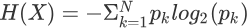
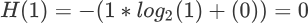
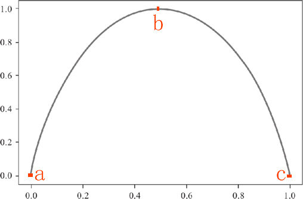
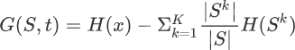

信息熵是什么
通过前两节的学习，我们对于决策树算法有了大体的认识，本节我们将从数学角度解析如何选择合适的“特征做为判别条件”，这里需要重点掌握“信息熵”的相关知识。
信息熵这一概念由克劳德·香农于1948 年提出。香农是美国著名的数学家、信息论创始人，他提出的“信息熵”的概念，为信息论和数字通信奠定了基础。
在理解“信息熵”这个词语前，我们应该理解什么是“信息”。信息是一个很抽象的概念，比如别人说的一段话就包含某些“信息”，或者我们所看到的一个新闻也包含“信息”，人们常常说信息很多，或者信息较少，但却很难说清楚信息到底有多少。比如一篇 10 万字的论文到底包含多少信息量？信息熵就是用来解决对信息的量化问题的。
“熵”这一词语从热力学中借用过来的，热力学中的“热熵”是表示分子状态混乱程度的物理量，香农使用“信息熵”这一概念来量化“信息量”。信息的计算是非常复杂的，具有多重前提条件的信息，更是无法计算，但由于信息熵和热力熵紧密相关，所以信息熵可以在衰减的过程中被测定出来。
比如“台湾是中国的固有领土”和“台湾不是中国的固有领土”，你感觉哪一句话传递的信息量更大？当然是后者，因为前者属于既定事实，而后者若要发生的话，可能是发生了巨大的变革而导致的。如果一件事 100% 发生，那么这件事就是确定的事情，其信息熵无限接近于最小，但如果这件事具有随机性，比如抛硬币，其结果可能正面也可能反面，那么这件事就很不确定，此时的信息熵就无限接近于最大值。
再比如，封闭的房间一直不打扫，那么房间不可能越来越干净，只能不断的落灰和结下蜘蛛网，如果想要让它变得整洁、有序就需要外力介入去打扫房间。这个过程中趋向于混乱的房间其信息熵不断增大，而打扫后的房间，则趋向于信息熵最小。伟大数学家香农给出了信息熵的计算公式，如下所示：
其中 p 代表概率的意思，这里 “X” 表示进行信息熵计算的集合。在决策树分类算法中，我们可以按各个类别的占比（占比越高，该类别纯度越高）来理解，其中 N 表示类别数目，而 Pk 表示类别 K 在子集中的占比。理解了上述含义，再理解信息熵的计算过程就非常简单了，分为三次四则运算，即相乘、求和最后取反。
关于对数函数的运算法则这里不再赘述，以 2 为底 1 的对数为 0，因此最终两个类别的信息熵求和结果为 0。信息熵为 0 说明子集内的类别一致“整齐有序”。由此也可以得知 pk=0.5 时候信息熵的取得最大值。下面根据上述信息，我们绘制信息熵的函数图像，如下所示：
ID3（Iterative Dichotomiser 3，迭代二叉树3代）算法是决策树算法的其中一种，它是基于奥卡姆剃刀原理实现的，这个原理的核心思想就是“大道至简，用尽量少的东西去做更多的事情”。
把上述原理应用到决策树中，就有了 ID3 算法的核心思想：越小型的决策树越优于大的决策树，也就是使用尽可能少的判别条件。ID3 算法使用了信息增益实现判别条件的选择，从香农的“信息论”中可以得知，ID3 算法选择信息增益最大的特征维度进行 if -else 判别。
简单地说，信息增益是针对一个具体的特征而言的，某个特征的有无对于整个系统、集合的影响程度就可以用“信息增益”来描述。我们知道，经过一次 if-else 判别后，原来的类别集合就被被分裂成两个集合，而我们的目的是让其中一个集合的某一类别的“纯度”尽可能高，如果分裂后子集的纯度比原来集合的纯度要高，那就说明这是一次 if-else 划分是有效过的。通过比较使的“纯度”最高的那个划分条件，也就是我们要找的“最合适”的特征维度判别条件。
最后，比较不同特征属性的信息增益，增益值越大，说明子集的纯度越高，分类的效果就越好，我们把效果最好的特征属性选为 if-else 的最佳判别条件。
ID3 算法是一个相当不错的决策树算法，能够有效解决分类问题，其原理比较容易理解。C4.5 算法是 ID3 算法的增强版，这个算法使用了“信息增益比”来代替“信息增益”，而 CART 算法则采用了“基尼指数”来选择判别条件，“基尼指数”并不同于“信息熵”，但却与信息熵有着异曲同工之妙，这些将作为延伸扩展知识，在后续内容中讲解。
信息熵这一概念由克劳德·香农于1948 年提出。香农是美国著名的数学家、信息论创始人，他提出的“信息熵”的概念，为信息论和数字通信奠定了基础。
在理解“信息熵”这个词语前，我们应该理解什么是“信息”。信息是一个很抽象的概念，比如别人说的一段话就包含某些“信息”，或者我们所看到的一个新闻也包含“信息”，人们常常说信息很多，或者信息较少，但却很难说清楚信息到底有多少。比如一篇 10 万字的论文到底包含多少信息量？信息熵就是用来解决对信息的量化问题的。
“熵”这一词语从热力学中借用过来的，热力学中的“热熵”是表示分子状态混乱程度的物理量，香农使用“信息熵”这一概念来量化“信息量”。信息的计算是非常复杂的，具有多重前提条件的信息，更是无法计算，但由于信息熵和热力熵紧密相关，所以信息熵可以在衰减的过程中被测定出来。
理解信息熵
想要非常清楚地讲明白“信息熵”到底是什么？需要结合物理上的知识，不过这样就有点“舍本逐末”，所以我们只要理解香农给出的相关结论即可：信息熵是用于衡量不确定性的指标，也就是离散随机事件出现的概率，简单地说“情况越混乱，信息熵就越大，反之则越小”。为了便于大家理解，我们通过下述示例进一步说明：
比如“台湾是中国的固有领土”和“台湾不是中国的固有领土”，你感觉哪一句话传递的信息量更大？当然是后者，因为前者属于既定事实，而后者若要发生的话，可能是发生了巨大的变革而导致的。如果一件事 100% 发生，那么这件事就是确定的事情，其信息熵无限接近于最小，但如果这件事具有随机性，比如抛硬币，其结果可能正面也可能反面，那么这件事就很不确定，此时的信息熵就无限接近于最大值。
再比如，封闭的房间一直不打扫，那么房间不可能越来越干净，只能不断的落灰和结下蜘蛛网，如果想要让它变得整洁、有序就需要外力介入去打扫房间。这个过程中趋向于混乱的房间其信息熵不断增大，而打扫后的房间，则趋向于信息熵最小。伟大数学家香农给出了信息熵的计算公式，如下所示：

其中 p 代表概率的意思，这里 “X” 表示进行信息熵计算的集合。在决策树分类算法中，我们可以按各个类别的占比（占比越高，该类别纯度越高）来理解，其中 N 表示类别数目，而 Pk 表示类别 K 在子集中的占比。理解了上述含义，再理解信息熵的计算过程就非常简单了，分为三次四则运算，即相乘、求和最后取反。
信息熵公式计算
下面我们举一个简单的例子，对上述信息熵计算公式进行简单的应用，在二元分类问题中，如果当前样本全部属于 k 类别，那么该类别在子集节点中的占比达到 100%（而另一个类别占比为 0），即 pk = 1，此时信息熵的计算公式如下：

关于对数函数的运算法则这里不再赘述，以 2 为底 1 的对数为 0，因此最终两个类别的信息熵求和结果为 0。信息熵为 0 说明子集内的类别一致“整齐有序”。由此也可以得知 pk=0.5 时候信息熵的取得最大值。下面根据上述信息，我们绘制信息熵的函数图像，如下所示：

ID3算法—信息增益
通过前面知识的学习，我们知道决策树算法是以包含所有类别的集合为计算对象，并通过条件判别，从中筛选出纯度较高的类别，那么我们如何利用信息熵从特征集合中选择决策条件呢？下面我们以 ID3 算法为例进行说明。ID3（Iterative Dichotomiser 3，迭代二叉树3代）算法是决策树算法的其中一种，它是基于奥卡姆剃刀原理实现的，这个原理的核心思想就是“大道至简，用尽量少的东西去做更多的事情”。
把上述原理应用到决策树中，就有了 ID3 算法的核心思想：越小型的决策树越优于大的决策树，也就是使用尽可能少的判别条件。ID3 算法使用了信息增益实现判别条件的选择，从香农的“信息论”中可以得知，ID3 算法选择信息增益最大的特征维度进行 if -else 判别。
1) 理解信息增益
那么到底什么是信息增益？我们又如何计算特征维度信息增益值的大小呢？简单地说，信息增益是针对一个具体的特征而言的，某个特征的有无对于整个系统、集合的影响程度就可以用“信息增益”来描述。我们知道，经过一次 if-else 判别后，原来的类别集合就被被分裂成两个集合，而我们的目的是让其中一个集合的某一类别的“纯度”尽可能高，如果分裂后子集的纯度比原来集合的纯度要高，那就说明这是一次 if-else 划分是有效过的。通过比较使的“纯度”最高的那个划分条件，也就是我们要找的“最合适”的特征维度判别条件。
2) 信息增益公式
那么如何计算信息增益值，这里我们可以采用信息熵来计算。我们通过比较划分前后集合的信息熵来判断，也就是做减法，用划分前集合的信息熵减去按特征维度属性划分后的信息熵，就可能够得到信息增益值。公式如下所示：

G(S,a) 表示集合 S 选择特征属性 t 来划分子集时的信息增益。H(x) 表示集合的信息熵。上述的“减数”看着有点复杂，下面重点讲解一下减数的含义：- 大写字母 K 表示：按特征维度 t 划分后，产生了几个子集的意思，比如划分后产生了 5 个子集吗，那么 K = 5。
- 小写字母 k 表示：按特征维度 t 划分后，5 个子集中的某一个子集，k = 1 指的是从第一个子集开始求和计算。
-
|S| 与 |Sk| 表示：集合 S 中元素的个数，这里的
||并不是绝对值符号，而 |Sk| 表示划分后，某个集合的元素个数。 - |S| /|Sk| 表示：一个子集的元素个数在原集合的总元素个数中的占比，指该子集信息熵所占的权重，占比越大，权重就越高。
最后，比较不同特征属性的信息增益，增益值越大，说明子集的纯度越高，分类的效果就越好，我们把效果最好的特征属性选为 if-else 的最佳判别条件。
ID3 算法是一个相当不错的决策树算法，能够有效解决分类问题，其原理比较容易理解。C4.5 算法是 ID3 算法的增强版，这个算法使用了“信息增益比”来代替“信息增益”，而 CART 算法则采用了“基尼指数”来选择判别条件，“基尼指数”并不同于“信息熵”，但却与信息熵有着异曲同工之妙，这些将作为延伸扩展知识，在后续内容中讲解。
关注公众号「站长严长生」，在手机上阅读所有教程，随时随地都能学习。内含一款搜索神器，免费下载全网书籍和视频。

微信扫码关注公众号